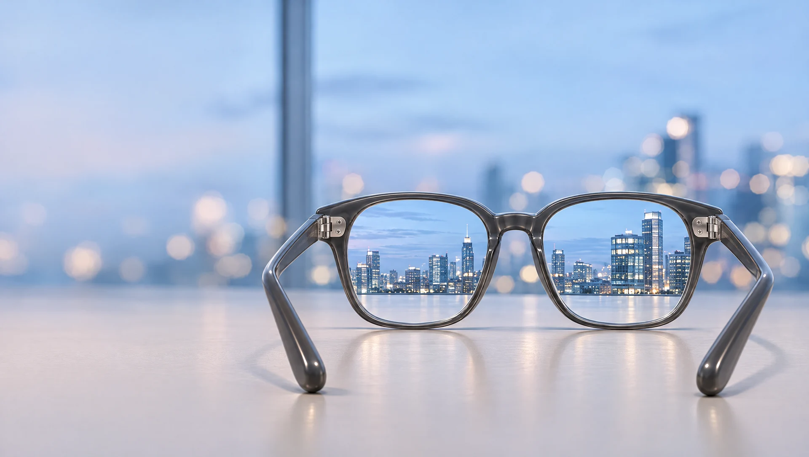

Мир чётче.
Вы ближе
к себе.
Очки и оправы для всей семьи. Изготовим очки по вашему рецепту, поможем с выбором оправы.
Осетинская, 16 · Куйбышева, 84 · Ново-Садовая, 164Для вашего взгляда
Оправы для детей и взрослых, очки на каждый день. Найдите свой вариант в салоне.
Оправы5 фотографий
Варианты оправ
Изображения иллюстративные. Наличие уточняйте в салоне.


Готовые очки5 фотографий
Варианты готовых очков для чтения
Изображения иллюстративные. Наличие уточняйте в салоне.


Stellest®
для детского зрения
Очковые линзы Essilor® Stellest® предназначены для коррекции близорукости и помогают замедлять её прогрессирование у детей. Подходят ли они ребёнку, определяет офтальмолог.
Уточните возможность заказа линз и выбор детской оправы в салоне.
Узнать о линзах Stellest ↗ О технологии у производителя ↗Есть противопоказания. Необходима консультация специалиста.
Ваш рецепт.
Ваши очки.
Изготовим очки по рецепту, в том числе при астигматизме. Возможность срочного изготовления, стоимость и срок уточните по телефону.
Нужен ремонт очков? Позвоните, чтобы уточнить возможность ремонта и стоимость.
Обсудить изготовление ↗Расскажите, какие очки нужны
Выберите оправу в салоне
Уточните детали изготовления
Что вы ищете?
Оправы
Примерьте оправу в салоне, чтобы оценить форму и посадку. Позвоните, чтобы уточнить ассортимент.
Посмотреть 5 фотографий · оправы ↗
Посмотреть 5 фотографий · готовые очки ↗
Позвонить и подобрать очки ↗Вопросы, с которых
удобно начать
Где можно пройти диагностику зрения у врача?
Врачебная диагностика зрения проводится по адресу: Ново-Садовая, 164. По результатам обследования врач даст рекомендации по коррекции зрения. Время приёма уточните по телефону +7 (927) 001-60-95.
Можно прийти со своим рецептом?
Да, в салоне изготавливают очки по рецепту. Позвоните, чтобы уточнить детали заказа.
Как быстро будут готовы очки?
Есть возможность срочного изготовления. Точный срок зависит от заказа, уточните его по телефону.
Можно узнать стоимость заранее?
Позвоните и расскажите о рецепте и пожеланиях. Стоимость зависит от выбранной оправы и линз.
Что есть в салоне?
Оправы, готовые очки, контактные линзы, солнцезащитные очки и аксессуары.
Что важно знать о детских линзах Stellest?
Линзы Stellest® помогают корректировать близорукость и замедлять её прогрессирование у детей. Решение о назначении принимает офтальмолог. Позвоните, чтобы уточнить возможность заказа по рецепту.
Можно обратиться за ремонтом очков?
Да, в салоне есть ремонт очков. Возможность ремонта конкретной оправы, стоимость и срок уточните по телефону.